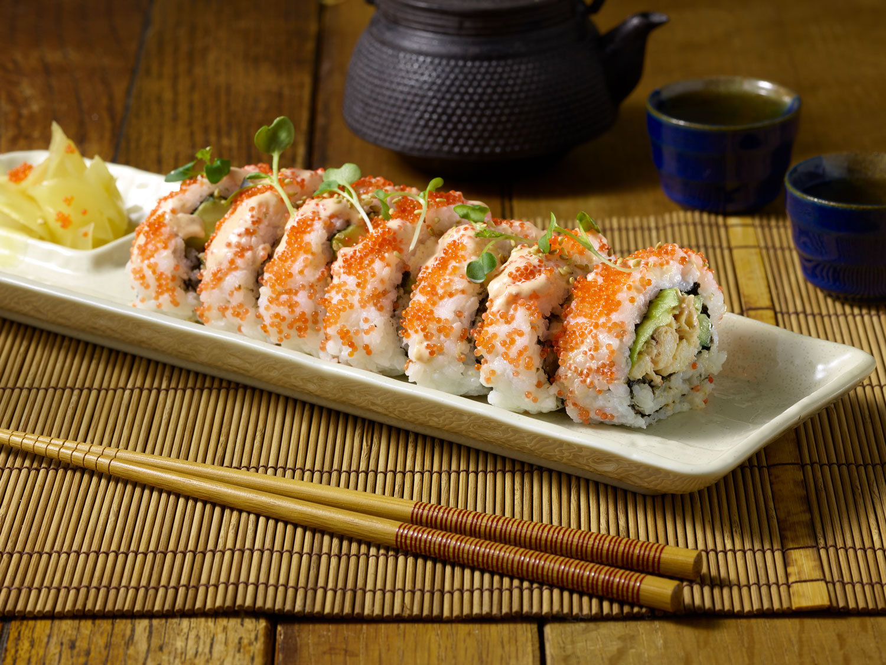

Sushi Recipe

description
Sushi-grade fish, creamy avocado, and crisp cucumber wrapped in vinegared rice and toasted seaweed. Clean, fresh, and delicious.
ingredients
The Core Essentials
- Sushi Rice: Short-grain Japanese rice (Sushimeshi).
- Rice Vinegar Seasoning: Rice vinegar + sugar + salt (mixed into warm cooked rice).
- Nori: Sheets of toasted seaweed
Fillings & Toppings
- Seafood: Fresh sushi-grade salmon, tuna, or cooked shrimp / crab sticks.
- Vegetables: Avocado, cucumber, or julienned carrots.
Serving & Condiments
- Soy Sauce: For dipping.
- Wasabi: Spicy green horseradish paste.
- pickled Ginger (Gari): To cleanse the palate between bites.
Steps
- Prepare & Season Rice
- Cook short-grain sushi rice. Gently fold in a mix of heated rice vinegar, sugar, and salt while cooling the rice to room temperature.
Assemble on Bamboo Mat
- Place a nori sheet on a bamboo rolling mat. Spread a thin layer of seasoned rice evenly over the nori, leaving a 1-inch empty border at the top, then lay thinly sliced fish and vegetables across the center.
Roll & Seal
- Use the mat to roll the nori tightly over the filling into a log, sealing the edge with a drop of water. Slice into bite-sized pieces using a sharp, wet knife.
home